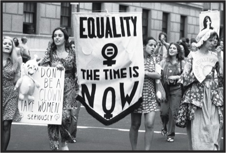
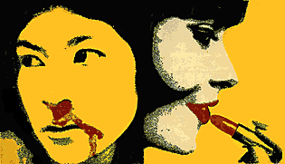

Women's Liberation March: http://feministguidetohollywood.blogspot.com/2012/11/a-tv-show-about-1970s-feminists.html
About Us
The Second Wave is a radical feminist dissident publication. We write as we speak – no editing or mincing our words, nu-uh honey. We are a collection of women determined to help our sisters realize their subjugation to men and to fight back. There is no editor, and we publish our print edition when we feel like it. After all, why worry about deadlines if it would destroy our message? And after watching Rat rise and fall, after seeing Ms. take to the stands like no other feminist magazine had done before, after witnessing our sister publications rise from the churning seas of seething women, we woke up to reality as well.
Women marching: https://caitlyncerini.wordpress.com/2013/02/25/the-19th-amendment-and-the-feminist-movement-of-the-1960s-and-1970s/
OUr Mission
We wanted to create our own magazine specifically for the woman who is coming-of-age, the one who is transitioning from girlhood to womanhood, and we aim to educate her about all of the traps in American society that her mother never could. The Second Wave covers timely events, politics, and feature stories all in our own informal tone. We figure these ladies have had enough of the niceties – they want to know the facts, and they want to know them NOW.
Poster by Cuban artist José Gómez Fresquet (Frémez), circa 1970: http://feministart20.blogspot.com/2014/03/feminist-art-movement.html
Our name is based on the idea that this era is the second wave of feminism in the United States – the first being the fight for women’s suffrage from the 1860’s all the way up ‘til 1920. This second round focuses on other problems women face today, such as unequal pay, lack of access to birth control and abortions, workplace discrimination, and general sexism. That’s what we cover in this magazine, along with features or successful or radical women, literature and film reviews, and calls to action. We will show the world what it means to be a woman.
We are the rising tsunami. We are The Second Wave!